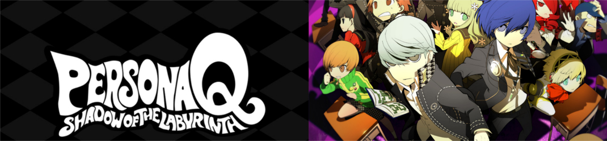

Contact us!
Contact us!
I mean, Background is everything right? Ok, so the Persona series is a long running series deviating from its Shin Megami Tensei Roots. The point of SMT games, and by extension the Persona Series, is to tackle real world issues.... with magical demons. Hey, its more original than Call Of Duty so I ain't complainin'. Anywho, The Persona series tends to deal with issues like Death and the 5 stages of grief(P3 and PQ), the mass manipulation of people via media (P4) and... to not aimlessly follow life? I'm not sure what P5 is trying to say..
But while the SMT/Persona line covers the story, the gameplay is based off Etrian Oddysey. And oh boy, can you tell. Now, I've not Properly played an EO game so I have little clue on whats going on in them, I do know "Etrian Oddysey" and "Easy" do not go together, the same as "Etrian Oddysey Players" and "Deer." The gameplay is essentially random encounters with 5 people beating up whatever rears its head, and there are unique enemies called "F.O.E's" which stand for "Field-On Enemy" (Which is probably down to how they appear on the map) - though a literal translation is "Formido Oppugnatura Exsequens" Which greek for something along the lines of "Terrors Executing Attack", which is rather accurate as its almost always a fight you'll lose. They are not easy fights, usually way tougher than everything else in the area.
Before I continue, it is worth noting you need to complete the game 3 times to 100% complete it. One for each protaganist, with each having slightly different events, characters, and also a not-so-secret hidden boss.
Alright, I better paraphrase this somewhat. The "Velvet room" is a staple of the Persona series where players could traditionally fuse, augment and store their totally-not-satan-based-based pokemon for later, with help from a... Long nosed old man that just wants to help, and his assitants, which vary. In Q, he's nowhere to be seen. Apparently that has an influence on the plot, but unless said old man is a butterfly (Oh right his name is Igor) I have no idea why.
Anyway, the entire cast of your selected characters team gets shoved into the players velvet room due to... something? Well, Something Spoilery, thats for certain. Either way, everyone turns up, and Igor's assistant watches chaos unfolds as a limo comes to a halt. Or the lift crashes down. Character choices, man...
And then they meet the best character (FINALLY! THESE GAMES HAVE A PURE INNOCENT CHARACTER) and arguably the worst character (hey, can't win them all) In the form of Rei and Zen.
These two are, quite literally, the driving force of the plot - so you better keep them safe. I have good news, my friend, for they are good in..
So, the gameplay is textbook Etrian Oddysey stuff. Using the hardware controls and the top screen, you navigate an increasingly complex set of labyrinths with the intent of needing a tombstone for the big bad.. thing at the end. I could tell you more about them, but each boss and labrynth is based on Rei's memories and thoughts. and lets just say that by the second dungeon... you should be worried for her. Just saying, you'll see why.... Either way, its a first-person tile-based maze where each step makes an encounter more likely. Eventually you will get in a fight, and then the game gives you some good old turn based fights. Unless its an F.O.E, in which its "lets spam escape for now", you can have up to five characters equipped (yes, even though there is 6 slots, you have to decide if you want more support or assault characters, and Zen/Rei share their slot if you have them equipped.) Your main character can also use leader skills from your teams Navigation member - and can be changed later to be either an on-the-fly healer or offer battle advantages. The good news is that one of these Navi roles can be set to Battles, and the other to Exploration - Meaning I quickly ended up making a consistent HP regen between fight.
One big key part of the gameplay is the usage of subs. Due to the lovely word called "Plot" Rather than your main character being able to switch between 8-12 of the totally-not-Pokemon Persona's they have while everyone else is stuck with one, Everyone can only equip 2 instead, but use them both at the same time. Early game this can seem useless if not for the bonus HP, but late game it can turn even the toughest of foes into cement paste within a few turns. Anyway, these sub personas are called "subs" and can be switched around any time you are not in combat. The choice to do this was made by the developers so that you can play as your favourite characters regardless of their setups. Again, Zen and Rei play the unique card of not being able to equip any personas, because they dont have one. That's made up for the with the stupidly huge skill pool they have, so carry on being you, Q.
... Oh right. It'd be bad if I forgot to mention one of Etrian Oddysey's main qualities: map making. The bottom screen contains a touch-interactive map that, other than steps filling in the floor tiles, you have to do yourself. Thats the walls, labelling the exits and entrances, F.O.E routes, chests, you know the score. Its actually quite a detailed system, but of course how in-depth you want it is down to you. Its also worth NOT filling in the actual floor tiles themselves (i.e the grey boxes that appear when you step) so that you know where to go to 100% the floor and earn a special item in a special chest. This can range from a once-per battle potion to an infinite GoHo-M (which as you can guess, gets you out of the labyrinth.)
Of course, theres other things to do, like augment your Personas, Hunt F.O.E's and do other sidequests, or farm resources to sell and upgrade your gear. The game makes a big point that time isn't an issue (which is a relief), so go for it!
And now its time for....Ok, Q, we get that you are on a 3DS, and that means the glorious realms of a whole 240p (OH BOY!) but the Persona series was never known for graphics UNTIL P5 WHY DID YOU DO THI--
*ahem* Anyway, The Graphics are alright for a 3DS, which means garbage but you can't tell because the screens are the size of a bank card. Everything is done in a Chibi style, which surpisingly works for a game about death. yay. Guess it just goes to show Anime lovers will be the end of human life.
Alright, I'm not going to lie, the Soundtrack is perfect. It could do with less guitar, sure, in fact about 85% of the entire OST is Guitar which should be an issue - but this is an Etrian Oddysey game, where I'm somewhat sure they don't know how to put the thing on the floor and step away. Hell, it took a re-release of the OST to take away some guitar... and inject twice as much into other places. Sigh. Either way, Noteable ones to look out for are...
Alright, overall its a pretty good game. I mean, its different from most games and it plays suprisingly well. The characters can be somewhat infuriating but its ignorable. Overall, i'd give it...
4 out of 5 StarsAnd remember kids, its all fun and games until someone SPOILER REDACTED